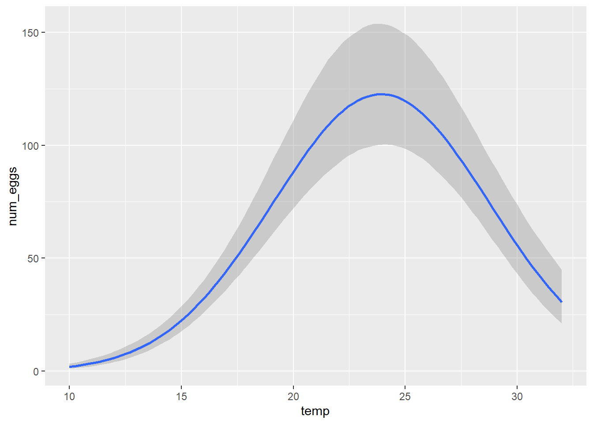
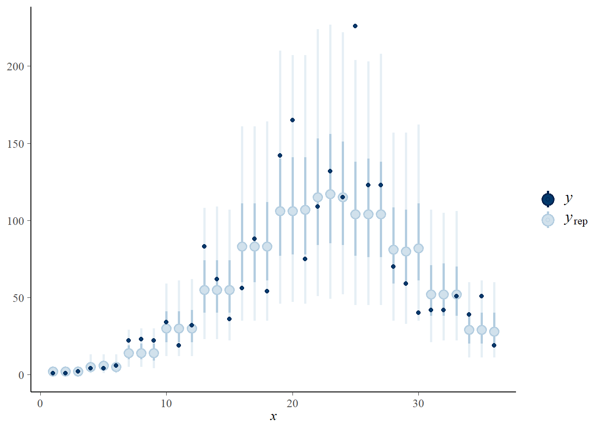

Déjà utilisé pour les exercices sur le maximum de vraisemblance, le tableau de données thermal_range.csv représente le résultat d’une expérience visant à déterminer l’effet de la température (temp) sur le nombre d’oeufs (num_eggs) produits par une espèce de moustique. Trois réplicats ont été mesurés pour des valeurs de température entre 10 et 32 degrés Celsius.
library(brms)
therm <- read.csv("../donnees/thermal_range.csv")
head(therm)## temp num_eggs
## 1 10 1
## 2 10 1
## 3 10 2
## 4 12 4
## 5 12 4
## 6 12 6Rappelons-nous le modèle utilisé précédemment pour ce jeu de données. Le nombre moyen d’oeufs produits est donné par une courbe gaussienne:
\[N = N_o \exp \left( - \frac{(T - T_o)^2}{\sigma_T^2} \right)\]
Dans cette équation, \(T_o\) est la température optimale, \(N_o\) est le nombre d’oeufs produits à cet optimum et \(\sigma_T\) représente la tolérance autour de l’optimum (plus \(\sigma_T\) est élevé, plus \(N\) décroit lentement autour de l’optimum).
brm(bf(num_eggs ~ No * exp(-(temp-To)^2/sigmaT^2), No + To + sigmaT ~ 1, nl = TRUE),
data = therm)Note:
Il faut entourer la formule dans une fonction bf et spécifier l’argument nl = TRUE (non-linéaire).
Après la formule non-linéaire du modèle, il faut ajouter un terme décrivant les paramètres. Ici, No + To + sigmaT ~ 1 signifie seulement que nous estimons un effet fixe pour chaque paramètre. Si un des paramètres variait en fonction d’une variable de groupe, nous pourrions écrire par exemple No ~ (1|groupe), To + sigmaT ~ 1.
Puisque nous allons utiliser une distribution binomiale négative avec un lien logarithmique pour représenter la moyenne de la réponse (family = negbinomial dans brms), nous devons modifier la formule ci-dessus pour représenter le logarithme du nombre d’oeufs moyen \(N\). Ré-écrivez la fonction bf en appliquant cette transformation.
Réponse
\[\log N = \log N_o - \frac{(T - T_o)^2}{\sigma_T^2}\]
brm(bf(num_eggs ~ logNo - (temp-To)^2/sigmaT^2, logNo + To + sigmaT ~ 1, nl = TRUE),
data = therm, family = negbinomial)set_prior, le nom du paramètre est spécifié ave nlpar pour un modèle non-linéaire. Par exemple, set_prior("normal(0, 1)", nlpar = "To") assigne une distribution normale centrée réduite au paramètre To.Note: N’oubliez pas de spécifier la borne inférieure pour sigmaT.
Ajoutez aussi une distribution a priori pour le paramètre \(\theta\) de la distribution binomiale négative avec set_prior("gamma(2, 0.1)", class = "shape"). Vous pouvez visualiser cette distribution dans R avec plot(density(rgamma(1E5, 2, 0.1)). Puisque la variance de la distribution binomiale négative est de \(\mu + \mu^2/\theta\), où \(\mu\) est la moyenne, nous voulons éviter les valeurs de \(\theta\) trop proches de zéro. Avec les paramètres spécifiés, \(\theta\) est petit pour des valeurs proches de 0 et plus grandes que 50 (avec un \(\theta\) si grand, la distribution binomiale négative rejoint pratiquement celle de Poisson).
Réponse
Voici un exemple pour le choix des distributions:
prior_therm <- c(set_prior("normal(4, 2)", nlpar = "logNo"),
set_prior("normal(20, 10)", nlpar = "To"),
set_prior("normal(0, 5)", nlpar = "sigmaT", lb = 0),
set_prior("gamma(2, 1)", class = "shape"))La distribution normal(4,2) pour \(\log N_o\) donne ~95% de probabilité aux valeurs de \(\log N_0\) entre 0 et 8, donc \(N_0\) entre 1 et 3000 environ.
La distribution normal(20, 10) pour \(T_o\) donne ~95% de probabilité aux valeurs entre 0 et 40 degrés C.
La distribution demi-normale (normale tronquée à 0) pour \(\sigma_T\) donne ~95% de probabilité aux valeurs inférieures à 10.
Notez qu’en considérant la plage de températures testées dans cette expérience (entre 10 et 32 degrés C), nous ne pourrions pas de toute façon détecter un optimum au-delà de cette zone, ou un écart-type qui dépasserait de beaucoup la différence entre les valeurs extrêmes testées.
brm le modèle non-linéaire avec la formule et les distributions a priori spécifiées dans les parties précédentes, en utilisant une distribution binomiale négative de la réponse. Visualisez la forme de la fonction \(N\) vs. \(T\) estimée avec marginal_effects. Déterminez la valeur moyenne et l’intervalle de crédibilité à 95% pour la distribution a posteriori de chaque paramètre.Réponse
therm_fit <- brm(bf(num_eggs ~ logNo - (temp-To)^2/sigmaT^2,
logNo + To + sigmaT ~ 1, nl = TRUE),
data = therm, family = negbinomial, prior = prior_therm)marginal_effects(therm_fit)## Warning: Method 'marginal_effects' is deprecated. Please use
## 'conditional_effects' instead.
summary(therm_fit)## Family: negbinomial
## Links: mu = log; shape = identity
## Formula: num_eggs ~ logNo - (temp - To)^2/sigmaT^2
## logNo ~ 1
## To ~ 1
## sigmaT ~ 1
## Data: therm (Number of observations: 36)
## Samples: 4 chains, each with iter = 2000; warmup = 1000; thin = 1;
## total post-warmup samples = 4000
##
## Population-Level Effects:
## Estimate Est.Error l-95% CI u-95% CI Rhat Bulk_ESS Tail_ESS
## logNo_Intercept 4.82 0.11 4.61 5.04 1.00 2447 2343
## To_Intercept 23.94 0.35 23.31 24.71 1.00 2223 1948
## sigmaT_Intercept 6.88 0.34 6.29 7.59 1.00 2030 2152
##
## Family Specific Parameters:
## Estimate Est.Error l-95% CI u-95% CI Rhat Bulk_ESS Tail_ESS
## shape 6.09 1.54 3.53 9.49 1.00 2705 2409
##
## Samples were drawn using sampling(NUTS). For each parameter, Bulk_ESS
## and Tail_ESS are effective sample size measures, and Rhat is the potential
## scale reduction factor on split chains (at convergence, Rhat = 1).| Paramètre | Estimé | Intervalle |
|---|---|---|
| \(N_o\) | 123.2 | (104.2, 147.2) |
| \(T_o\) | 23.9 | (23.4, 24.5) |
| \(\sigma_T\) | 6.82 | (6.33, 7.42) |
| \(k\) | 0.103 | (0.059, 0.186) |
Note: Le paramètre \(k\) correpond à \(1 / \theta\) pour la distribution binomiale négative.
Réponse
Les résultats pour \(T_o\) et \(\sigma_T\) sont très proches (considérant la marge d’erreur) pour les deux méthodes.
Pour les deux autres paramètres logNo et shape, on peut transformer les bornes des intervalles pour comparer avec \(N_o\) et \(k\) (mais puisque \(k\) est l’inverse de shape, il faut inverser les bornes). On peut aussi transformer la moyenne a posteriori, mais on ne s’attend pas à ce qu’elle soit égale au maximum de vraisemblance.
exp(c(4.82, 4.61, 5.04)) # N_o = exp(log_No)## [1] 123.9651 100.4841 154.47001/(c(6.09, 9.39, 3.50)) # k = 1/shape## [1] 0.1642036 0.1064963 0.2857143L’estimation de \(N_o\) est cohérente pour les deux méthodes, mais le paramètre \(k\) est plus élevé pour la méthode bayésienne (signifiant plus de surdispersion) par rapport au maximum de vraisemblance.
pp_check(..., type = "intervals"). Les observations semblent-elles cohérentes avec le modèle ajusté?Réponse
pp_check(therm_fit, type = "intervals")## Using all posterior samples for ppc type 'intervals' by default.
Si le modèle est bon, on s’attend à ce qu’environ 50% des points soient dans l’intervalle en trait gras et 90% dans l’intervalle en trait mince, ce qui semble être le cas ici.
posterior_epred de brms calcule la prédiction moyenne selon chacun de ces jeux de paramètres pour un nouveau jeu de données donné par l’argument newdata, un peu comme la fonction predict dans le cas des modèles de régression.Utilisez la fonction posterior_epred pour calculer le rapport entre la production d’oeufs moyenne à 25 degrés C comparée à celle à 20 degrés C, ainsi qu’un intervalle de crédibilité à 95% pour ce rapport.
Réponse
Nous appelons d’abord posterior_epred pour un jeu de données contenant les deux valeurs voulues de la température.
post_pred <- posterior_epred(therm_fit, newdata = data.frame(temp = c(20, 25)))
str(post_pred)## num [1:4000, 1:2] 91.1 92.6 87.3 92.1 90.7 ...Le résultat est une matrice de 4000 rangées (un par jeu de paramètre tiré de la distribution a posteriori) et 2 colonnes (pour \(T\) = 20 C et \(T\) = 25 C).
La question nous demande la moyenne et l’intervalle de crédibilité à 95% pour le rapport entre les moyennes pour ces deux températures, donc chaque valeur de la colonne 2 divisée par la valeur correspondante de la colonne 1.
N_20_25 <- post_pred[, 2] / post_pred[ ,1]
mean(N_20_25)## [1] 1.357007quantile(N_20_25, probs = c(0.025, 0.975))## 2.5% 97.5%
## 1.196373 1.542194